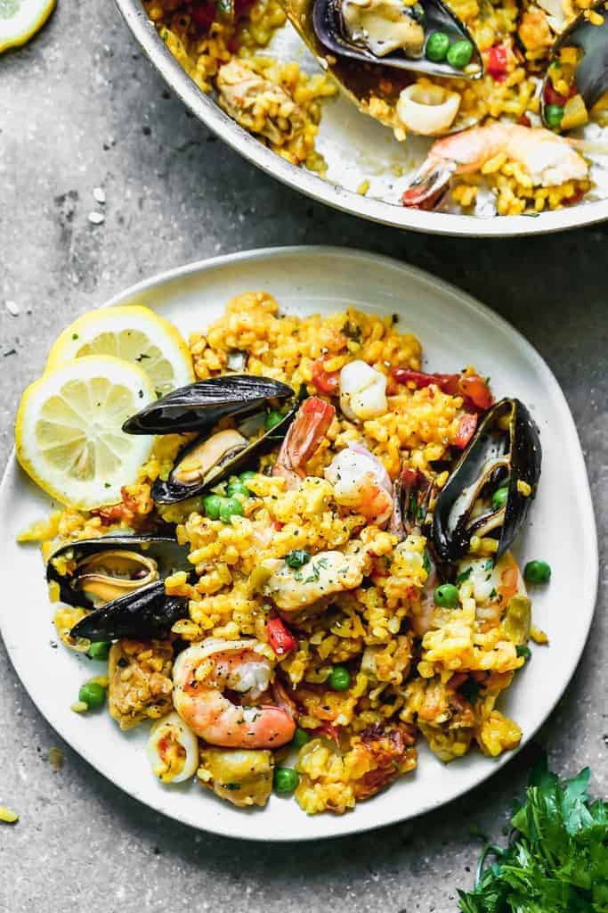
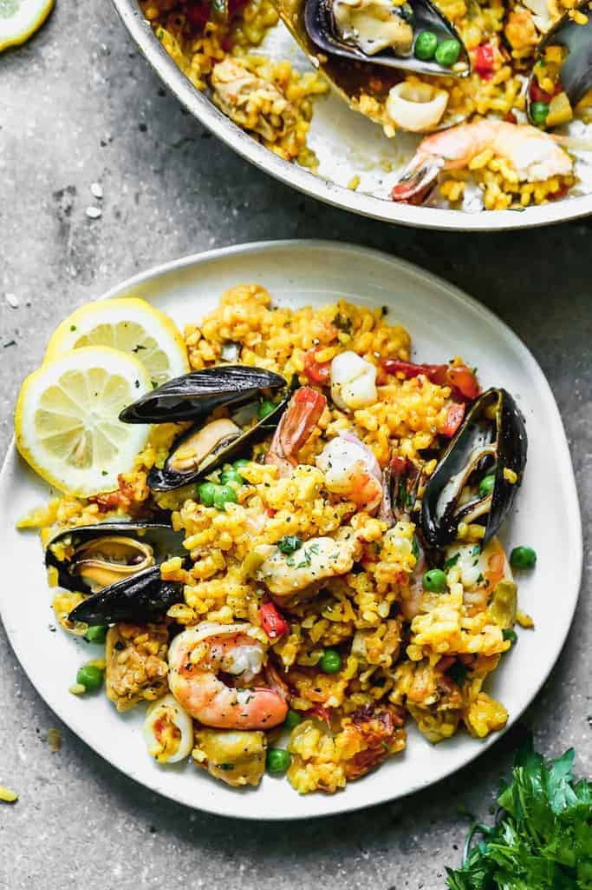

La paella valenciana es uno de los platos más emblemáticos de la gastronomía española. Originaria de la Comunidad Valenciana, esta receta tradicional ha pasado de generación en generación.
Se elabora con arroz, conejo, pollo, judía verde, garrofón, tomate, pimentón y azafrán. Todo se cocina a fuego lento, preferiblemente en leña, para conseguir un sabor auténtico e intenso.
La paella no es solo un plato, sino también una excusa para compartir en familia o entre amigos, representando la unión y la celebración en la cultura española.
 
